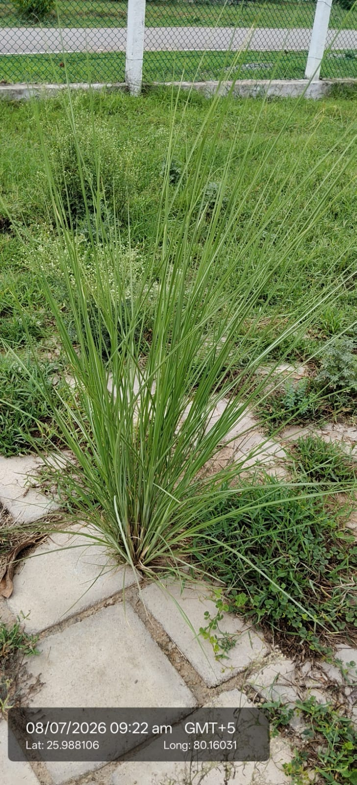

Visual record01 photographs

| Scientific name | Chrysopogon zizanioides |
|---|---|
| Family | Poaceae |
| Category | Grasses |
Habitat & Growing Conditions
- Native to India. Widely distributed across tropical regionsVery common in UP including Kanpur area at your coordinates. Found on roadsides, wastelands, riverbanks, and planted for soil conservation like in your photoThrives in tropical to subtropical climate. Extremely drought and flood tolerantGrows in almost any soil - even poor, saline, or waterlogged soil. Needs full sunForms dense clumps 1-2 m tall. Long, thin, aromatic leaves grow upright from a central base. Non-invasive because it doesn't spread by stolons. Roots can go 3-4 m deep
Economic Importance
- Essential oil: Roots yield "Khus oil" used in perfumery, cosmetics, soaps, and aromatherapy. The oil has a cooling, earthy scent
- Super important for soil and water conservation. Deep roots prevent soil erosion and bind soil on slopes. Used in phytoremediation to clean polluted water and soil. Excellent for stabilizing embankments
Medicinal Importance
- Roots used in Ayurveda for cooling effect, fever, skin diseases, and as a blood purifier. Used to make khus sherbet and syrup for summer. Note: Consult a healthcare professional before any medicinal use
Field Notes
- Synonym: Vetiveria zizanioides
- Roots used to make khus mats, fans, and screens for evaporative cooling. Dried grass used for handicrafts, thatching, and mulch. Used in herbal sachets as natural insect repellent